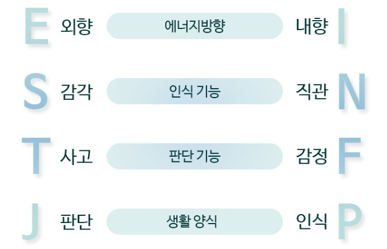

폭넓은 대인관계를 유지하며 사교적이고 정열적이고 활동적이다
자기외부에 주의집중 / 외부활동과 적극성 / 정열적, 활동적 / 말로 표현 / 경험한 다음에 이해 / 쉽게 알려짐
깊이있는 대인관계를 유지하며 조용하고 신중하며 이해한 다음에 경험한다
자기내부에 주의집중 / 내부활동과 집중력 / 조용하고 신중 / 글로 표현 / 이해한 다음에 경험 / 서서히 알려짐
오감에 의존하며 실제의 경험을 중시하고 지금, 현재에 초점을 맞춰 정확히, 철저하게 일처리 한다
지금, 현재에 초점 / 실제의 경험 / 정확, 철저한 일처리 / 사실적 사건묘사 / 나무를 보려는 경향 / 가꾸고 추수함
육감 내지 영감에 의존하며 미래지향적이고 가능성과 의미를 추구하며 신속, 비약적으로 일처리한다
미래 가능성에 초점 / 아이디어 / 신속 비약적인 일처리 / 비유적, 암시적 묘사 / 숲을 보려는 경향 / 씨뿌림
진실과 사실에 주관심을 갖고 논리적, 분석적이며 객관적으로 판단한다
진실, 사실에 주관심 / 원리와 원칙 / 논거, 분석적 / 맞다, 틀리다 / 규범, 기준중시 / 지적 논평
사람과 관계에 주관심을 갖고 상황적이며 정상을 참작한 설명을 한다
사람, 관계에 주관심 / 의미와 영향 / 상황적, 포괄적 / 좋다, 나쁘다 / 나에게 주는 의미 중시 / 우호적 협조
분명한 목적과 방향이 있으며 기한을 엄수하고 철저히 사전계획하고 체계적이다
정리 정돈과 계획 / 의지적 추진 / 신속한 결론 / 통제와 조정 / 분명한 목적의식과 방향감각 / 뚜렷한 기준과 자기의사
목적과 방향은 변화가능하고 상황에 따라 일정이 달라지며 자율적이고 융통성이 있다
상황에 맞추는 개방성 / 이해로 수용 / 유유자적한 과정 / 융통과 적응 / 목적과 방향은 변화할 수 있다는 개방성 / 재량에 따라 처리될 수 있는 포용성